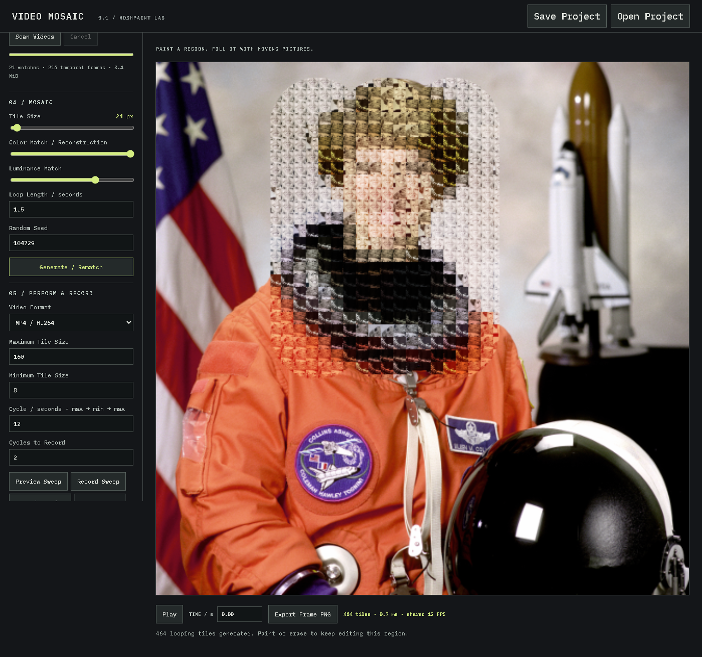
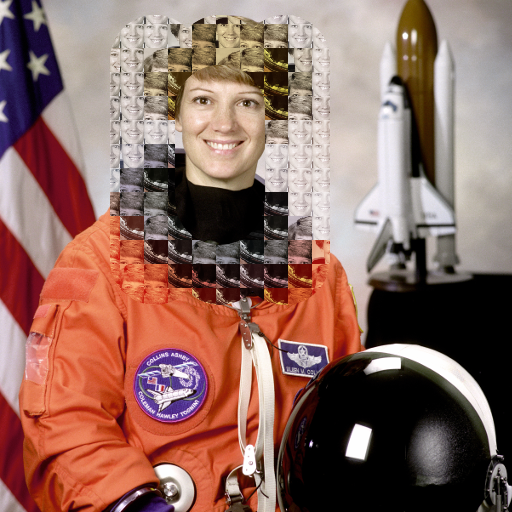

A machine by Travers MacMaster
Video Mosaic MakerCreate Moving Mosaics from Video Clips
Video Mosaic creates a larger visual composition from individually moving video clips. Paint a region of a photograph, then fill it with matched video tiles that keep looping in motion—an animated mosaic for experimental video art, not a pixelation filter, contact sheet, or ordinary split-screen editor.

The form
What is a video mosaic?
A video mosaic is a larger image or visual composition constructed from many smaller video tiles. In this maker, each tile comes from an imported video clip and continues to move as a short loop, producing a living image rather than a static photo mosaic.
Moving clips as material
The source footage becomes a pool of animated fragments. The software analyzes those fragments, matches them to the target photograph, and assigns them across the painted region as a moving collage.
A specific kind of video collage
This is a video mosaic made from video clips, not a multi-camera video grid or contact sheet. The clips act like pixels or tesserae: small moving pieces that combine into one recognizable composition.
Process
How it works
- 01Load a target photograph and brush over the area you want to reconstruct.
- 02Add several browser-compatible video clips and scan them to prepare shared moving frames.
- 03Generate the video tile mosaic, then tune tile size, color, luminance, loop length, and random seed.
- 04Play the animated mosaic, perform a tile-size sweep, export a PNG frame, or record MP4 or WebM video.
Features
Build and perform a moving mosaic
Video Mosaic combines direct painting with procedural matching, giving the video mosaic creator control over both the shape of the composition and the behavior of its moving tiles.
Painted regions
Brush, erase, clear, invert, undo, and redo the mask while the original photograph remains intact outside the selected area.
Matched video tiles
Color and luminance controls guide how video loops reconstruct the target. Tile size changes the balance between recognizable image structure and visible moving footage.
Motion and recording
Independent deterministic loop phases keep the video clip mosaic alive. Preview or record animated tile-size sweeps, capture manual performances, or export an exact still frame.
Local creative workflow
Imported media stays in the browser. Projects can retain embedded assets, assignments, mask history, settings, and timeline position for later work.
Video mosaic example


From the same studio